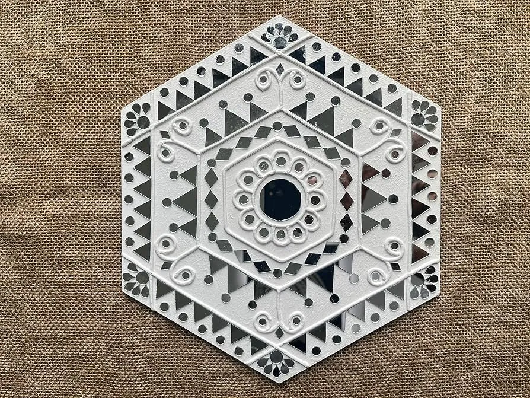

Overview
Mirror Work, known locally as

History
Mirror work embroidery has been practiced in Kutch for over 300 years. Originally, artisans used pieces of mica, a naturally reflective mineral, before glass mirrors became available. The tradition emerged among various communities including Rabari, Ahir, Mutwa, and Sodha Rajput women who adorned their clothing, bags, and household items with this technique. Each community developed distinctive patterns and color combinations.
The Shisha Stitch Technique
The mirrors are held in place using a unique
Traditional Communities & Styles
- •Rabari: Dense mirror work with geometric patterns, predominantly white and vibrant colors
- •Ahir: Large mirrors with bold floral motifs, rich color palette
- •Mutwa: Fine, delicate mirrors with intricate embroidery
- •Sodha Rajput: Rectangular mirrors arranged in geometric patterns
- •Jat: Colorful chain stitch embroidery combined with mirrors
- •Each community has distinct color preferences and pattern styles
Common Motifs & Patterns
- •Peacocks and parrots (symbols of beauty)
- •Flowers and trees (nature-inspired)
- •Geometric patterns (triangles, diamonds, squares)
- •Elephants and camels (regional animals)
- •Human figures in traditional dress
- •Border patterns with intricate details
Types of Products
Mirror work adorns a wide variety of items: traditional chaniya cholis (skirt and blouse sets), dupattas, wall hangings, cushion covers, bags, torans (door hangings), quilts, and even contemporary fashion wear. Modern designers have adapted this traditional craft for global fashion, creating fusion wear that combines traditional techniques with contemporary designs.
Colors & Symbolism
Traditional mirror work uses vibrant colors - deep reds, royal blues, emerald greens, sunny yellows, and bright oranges. Each community has color preferences: Rabaris favor white and black with bright accents, Ahirs prefer bold primary colors, and Jats love rainbow combinations. The mirrors themselves symbolize warding off evil eye and bringing good fortune.
How to Identify Quality Work
- •Mirrors should be firmly secured with no loose edges
- •Stitches around mirrors should be even and tight
- •Check the back of the fabric - quality work looks neat on both sides
- •Traditional pieces use hand-cut mirrors, not machine-pressed
- •Embroidery threads should be colorfast and not bleed
- •Look for intricate filling stitches between mirrors
Buying Tips
- •Visit villages like Bhujodi, Khavda, and Hodka for authentic pieces
- •Buy from women
- •Check for hand embroidery vs machine work (hand work has slight variations)
- •Authentic pieces may have slight imperfections - sign of handwork
- •Ask about washing instructions - quality work is washable
- •Prices vary greatly based on density of work and size of mirrors
- •Traditional pieces with antique mirrors are collector
Care & Maintenance
Hand wash mirror work garments gently in cold water with mild detergent. Avoid wringing or twisting. Dry in shade to preserve colors. Iron on reverse side with cloth protection. Store in breathable cotton bags away from moisture. With proper care, mirror work pieces last for generations.
Price Range
₹300 - ₹30,000+ depending on size, intricacy, and authenticity. Small items like pouches (₹300-800), dupattas (₹1,500-5,000), traditional blouses (₹2,000-8,000), wall hangings (₹3,000-15,000), and bridal chaniya cholis (₹15,000-30,000+).
Did You Know?
Mirror work was originally done with mica before glass mirrors became available
The Rabari community is particularly famous for their intricate mirror embroidery
Traditional bridal garments can contain thousands of tiny mirrors
Each mirror is individually hand-stitched - no machine can replicate the process
Mirror work serves a practical purpose - reflects heat in hot climate
The craft is mentioned in ancient Indian texts dating back centuries
International fashion designers regularly feature Kutch mirror work in their collections
A densely worked traditional blouse can take 2-3 months to complete
Gallery